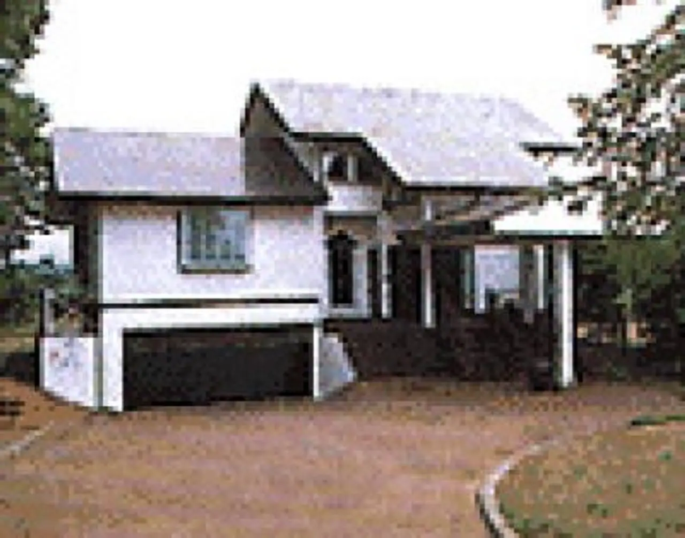
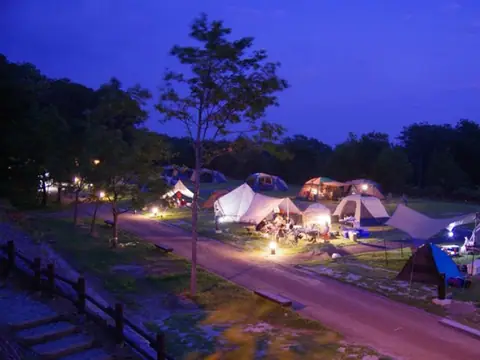
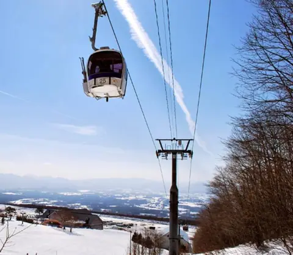
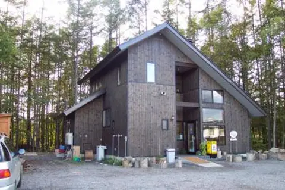

Japan / Iwate / Shizukuishi
Shizukuishi · Iwate
Shizukuishi
Highlighted on the Iwate map.

Shizukuishi Town Hall



Sights · Things to do · Places to eat · Places to stay · Day-to-day services
Nearby in Iwate: ← Shiwa · Sumita →
Other towns: Fudai · Hachimantai · Hanamaki · Hiraizumi · Hirono · Ichinohe · Ichinoseki · Iwaizumi · Iwate Town · Kamaishi · Kanegasaki · Karumai · Kitakami · Kuji · Kunohe · Kuzumaki · Miyako · Morioka · Ninohe · Nishiwaga · Noda · Ofunato · Oshu · Otsuchi · Rikuzentakata · Shiwa · Sumita · Takizawa · Tanohata · Tono · Yahaba · Yamada
All towns in Iwate · Back to all prefectures